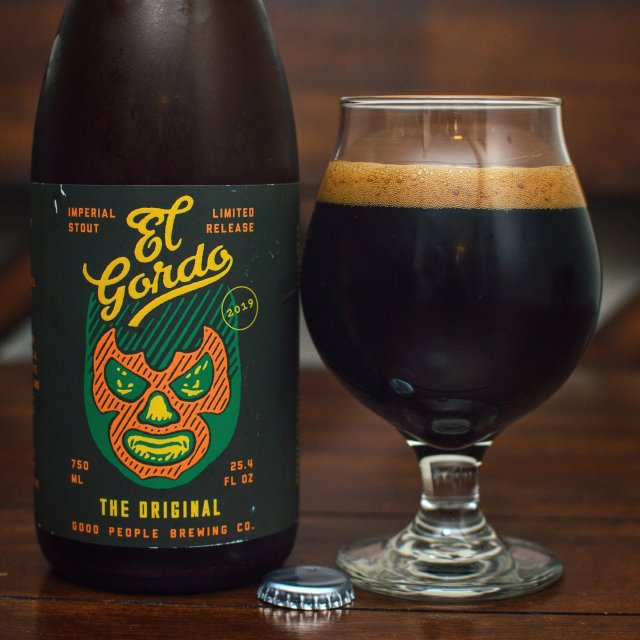

EL GORDO IMPERIAL STOUT
HOME
STOUTS
El Gordo
Good People Brewing Co.
El Gordo is a Russian Imperial Stout clocking in at 13.9% ABV, the legal limit in the state of Alabama. Notes of roasted malts, vanilla, bitter chocolate, and bourbon give this full-bodied stout its muscle and richness. In 2015, Paste Magazine named it the Best Non-Barrel Aged Imperial Stout in a blind taste test.
Good People Brewing Co., located in Birmingham, Alabama, is a leader in the South’s craft beer movement. Founded in 2008 by Michael Sellers and Jason Malone, it was the first craft brewery in the Southeast to can its beers.
Check out their site HERE 